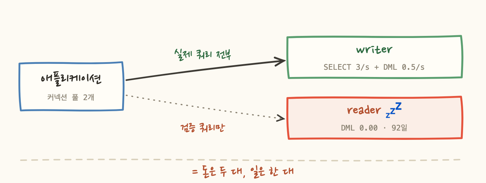
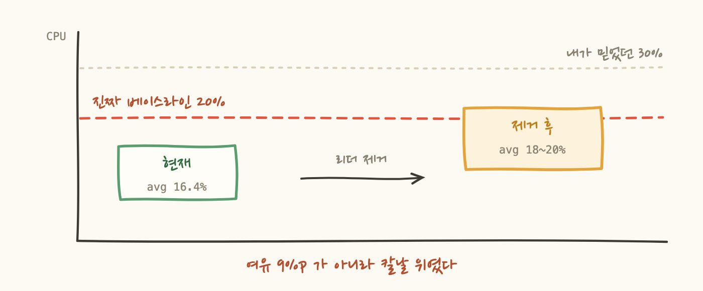
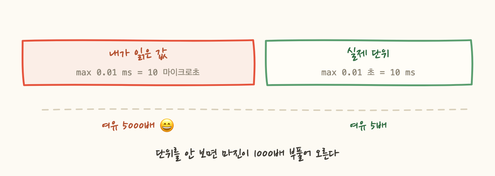
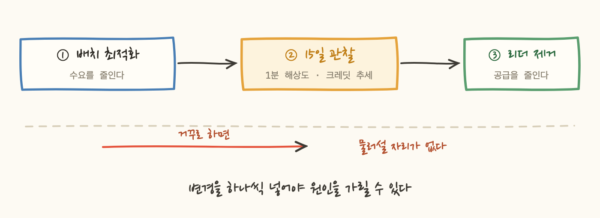

Aurora 클러스터에 인스턴스가 두 대 붙어 있었어요. writer 하나와 reader 하나입니다. 둘 다 같은 사양이고 둘 다 매달 같은 돈을 냅니다.
그런데 92일치 지표를 뽑아보니 reader의 쓰기가 정확히 0이었어요. 한 번도 아니고 92일 내내 0이었습니다. 그래서 자연스럽게 이 질문이 나왔습니다.
이거 지워도 되나요? 이 글은 "된다"는 답보다, 그 답에 붙일 근거를 만들다가 내가 만든 근거 세 개가 내 문서 안의 다른 숫자에 반증당한 이야기입니다.
reader가 안 쓰인다는 건 쉽게 보였어요. 이상했던 건 분포의 모양입니다.
p10과 p99의 차이가 SELECT 0.14/초예요. 사람이 쓰는 서비스는 이런 분포가 안 나옵니다. 새벽 4시와 오전 10시가 같을 수가 없으니까요.
범인은 커넥션 URL이었습니다. 드라이버가 writer와 reader 엔드포인트를 둘 다 참조하면서, 커넥션 풀의 검증 쿼리만 reader로 보내고 있었어요. 실제 쿼리는 전부 writer가 처리하고요. 심장박동처럼 일정한 부하였습니다. 그래서 분포가 자를 댄 것처럼 평평했던 겁니다.

여기까지는 측정이라 자신 있었어요. CloudWatch에서 뽑은 실측이고, writer와 reader를 나눠 보고, 월별 추세도 걸고, 분위수와 절대 최댓값을 따로 봤습니다.
문제는 판정표의 맨 오른쪽 열이었어요. CPU는 70% 미만, 크레딧은 500 초과, 커넥션은 1500 미만, 지연은 50ms 미만. 전부 ✅ 였고, 전부 제가 그럴듯해 보이게 지어낸 숫자였습니다.
지어낸 걸 알면서도 붙인 이유는 표에 빈칸을 두기 싫었기 때문이에요. 그런데 이 열이 하는 일이 뭔지 생각해보면, 그건 "지워도 된다"의 유일한 논리적 근거입니다. 측정값은 사실을 말하지만, 그 사실이 안전한지 판정하는 건 기준선이니까요. 근거가 비어 있으면 남은 건 "그래프가 낮아 보인다"뿐입니다.
그래서 기준을 하나씩 되짚었더니, 셋이 무너졌어요. 새 지식이 필요한 게 아니라 제 문서 안에서 산수 한 번이면 걸렸을 것들이었습니다.
버스터블 인스턴스(t 계열)는 CPU 예산제로 돕니다. 정해진 베이스라인 아래로 쓰면 크레딧이 쌓이고, 넘어서 쓰면 쌓인 걸 꺼내 씁니다. 그래서 판단의 핵심이 "베이스라인이 몇 %냐"예요.
저는 30%라고 썼습니다. 근거는 없었고요. 그런데 같은 문서에 이미 답이 적혀 있었어요.
30%가 아니라 20%였습니다. 30%는 한 단계 위 사양의 값이에요. 그리고 이 10%p가 결론을 흔듭니다.
제가 쓴 마지막 문장은 "베이스라인 30% 아래를 유지하므로 크레딧 소모가 계속 발생하지 않습니다"였어요. 20%로 다시 읽으면 성립하지 않는 문장입니다.
재미있는 건 결론 자체는 살아남았다는 거예요. 다만 이유가 달랐습니다. 92일간 크레딧이 576에서 569까지밖에 안 내려갔다는 실측이 어떤 기준선보다 강한 증거였어요. 기준선은 미래에 대한 추정이고, 이건 과거에 대한 사실이니까요. 제 결론은 맞았지만 제가 댄 이유는 틀렸고, 이유가 틀린 채로 맞은 결론은 다음번에 틀립니다.

문서에 이런 문장을 썼어요. "2,208시간 동안 p10~p99의 차이가 SELECT 0.14/초입니다."
2,208 = 92 x 24. 데이터포인트가 시간당 하나였다는 뜻이에요. 그때는 그냥 기간을 시간으로 환산한 숫자로 썼는데, 사실 그건 제가 어떤 해상도로 보고 있었는지를 자백하는 숫자였습니다.
CloudWatch는 오래된 데이터를 원본 해상도로 보관하지 않아요.
여기서 두 가지가 무너집니다.
첫째, "절대 최댓값"이 최댓값이 아니에요. 1시간 평균 62%는 그 한 시간의 평균입니다. 그 안에서 순간 CPU가 90%를 찍고 나머지가 낮았어도 평균은 62%로 나옵니다. 크레딧 소모는 순간값에 걸리는데, 저는 순간값을 못 보고 있었어요. 제 최댓값은 진짜 최고점의 하한선일 뿐입니다.
둘째, reader 분포가 평평한 게 부분적으로 집계 때문이에요. 1시간 평균을 내면 원래 평평해집니다. 튀는 값이 평균에 흡수되니까요. "이런 분포는 트래픽일 수 없다"는 제 근거가 생각보다 약했던 겁니다.
reader에 대한 결론 자체는 버텼습니다. 쓰기가 0이라는 것과 URL 설정이라는 독립적인 근거 두 개가 따로 받쳐주고 있었으니까요. 다만 저는 근거를 셋으로 세고 있었는데 실은 둘이었어요.
WriteLatency max 0.01ms vs 기준 50ms 라고 쓰고 "여유 5000배"라며 넘겼어요.ReadLatency · WriteLatency 단위는 밀리초가 아니라 초입니다.
스파이크의 정체도 짚어야 했어요. p99가 11인데 최댓값이 102로 열 배 차이였습니다. 처음엔 "1% 미만이니 예외"라고 썼습니다. 그런데 1%를 시간으로 바꿔보겠습니다.
"전체의 1% 미만"과 "매일 15분씩"은 같은 사실인데 인상이 반대예요. 후자는 예외가 아니라 일상입니다. 그리고 이 스파이크는 매일 도는 배치였어요. 랜덤이 아니라 스케줄된 부하고, 그래서 줄일 수 있는 부하였습니다.
그러면 할 일이 두 개가 됩니다. 배치를 최적화하는 것과 인스턴스를 줄이는 것. 둘을 같이 넣으면 편하겠지만, 그러면 작업 후에 CPU가 예상보다 높게 나올 때 원인이 어느 쪽인지 영구히 가릴 수 없어요.
그래서 수요를 먼저 줄이고, 확인한 다음, 공급을 줄이기로 했습니다. 반대로 하면 용량을 이미 내놓은 상태에서 배치 최적화가 실패했을 때 물러설 자리가 없고요. 그리고 이 순서가 앞의 해상도 문제까지 같이 해결해줍니다. 두 작업 사이에 관찰 기간이 생기고, 그 기간은 15일 이내라 1분 해상도로 조회되니까요. 92일 추세는 이미 갖고 있었고, 없던 건 해상도뿐이었습니다.
그 관찰 기간에 통과 조건도 숫자로 명시해뒀어요. "줄어든 거 확인하고"에서 확인이 정의되지 않으면, 나중에 "느낌상 괜찮아 보이니 지우자"가 됩니다.
1차 지표를 크레딧으로 잡은 건 이유가 있어요. 크레딧 잔량은 (CPU - 베이스라인)을 시간에 대해 적분한 값입니다. 넘은 크기와 넘은 시간을 한 숫자가 동시에 담아요. CPU 퍼센트는 "얼마나 오래"를 못 담아서 아까 "1% = 22시간" 같은 함정에 빠지는데, 크레딧은 그게 구조적으로 불가능합니다.
standard와 unlimited 두 모드가 있고, RDS 계열은 기본이 unlimited인 경우가 있어요.unlimited면 크레딧이 바닥나도 성능이 떨어지는 대신 초과분이 요금으로 청구됩니다. 위 게이트의 의미가 달라져요. 성능 리스크가 아니라 비용 리스크가 됩니다.
무너진 근거 세 개를 나란히 놓으면 공통점이 보입니다.
셋 다 AWS 문서를 새로 읽어야 알 수 있는 게 아니었어요. 제 표 안의 다른 숫자와 맞춰보거나, 값이 물리적으로 말이 되는지 한 번 되짚으면 걸렸을 것들입니다.
그래서 지금 저에게 제일 필요한 습관은 새 지식이 아니라 내가 쓴 표를 남의 표처럼 한 번 검산하는 것이라고 생각해요. 측정은 도구가 해주지만, 그 측정에 기준선을 붙이는 건 사람이 하는 일이고, 거기가 제가 제일 약한 부분이었습니다.
덧붙이면, 판정표에 지표가 여덟 개 있었는데 전부 CPU · 메모리 · 커넥션 같은 리소스였어요. 사용자가 겪는 건 리소스가 아니라 배치가 40분에 끝나던 게 60분 걸리는 것입니다. 그 지표는 CloudWatch에 없고 애플리케이션이 직접 내보내야 하는데, 표에 없었습니다. CPU가 18%라서 통과라고 판정하면서 배치가 1.5배 느려진 걸 못 보는 결말이 가능했다는 뜻이에요.